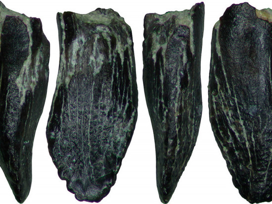
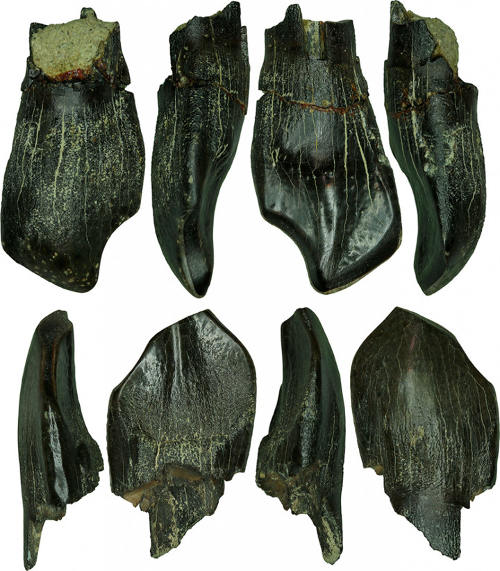

Камаразавр-древний зауропод, обитавший в приполярных районах Северной Америки и Якутии. Камаразавр-самый северный представитель гигантских зауропод. Ранее считалось, что камаразавры лишь временно прибывали в Сунтарский район. Но это предположение опровергается окаменелыми зубами детеныша камаразавра, которые указывают на то, что они гнездились в Сунтаре.

Зуб взрослой особи

Зубы детёнышей